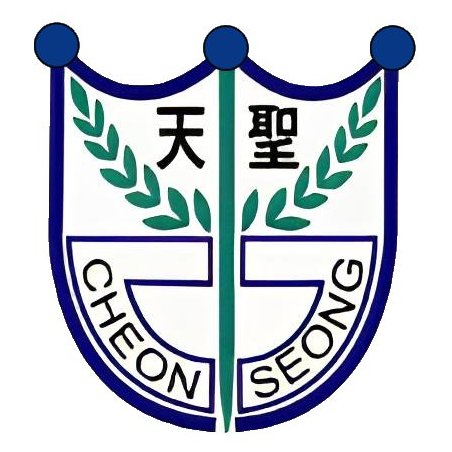
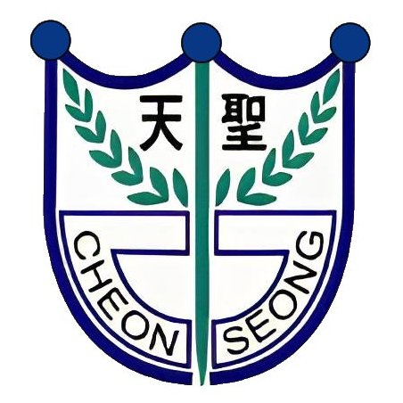

PAST
어릴 때부터 수학과 논리적 사고에 관심이 많았음. 초등학교, 중학교를 거쳐 수학을 더욱 깊이 탐구.

NOW
충남과학고 2학년. 공리적 물리학, P-adic number, 메타물질 연구 중. Minecraft BE 모딩과 웹 개발도 진행.
FUTURE
서울대 수리과학부 또는 KAIST 진학 목표. 학문적으로 성장하며, 연구자로서의 길을 개척해나가고 싶음.
어릴 때부터 수학과 논리적 사고에 관심이 많았음. 초등학교, 중학교를 거쳐 수학을 더욱 깊이 탐구.

충남과학고 2학년. 공리적 물리학, P-adic number, 메타물질 연구 중. Minecraft BE 모딩과 웹 개발도 진행.
서울대 수리과학부 또는 KAIST 진학 목표. 학문적으로 성장하며, 연구자로서의 길을 개척해나가고 싶음.